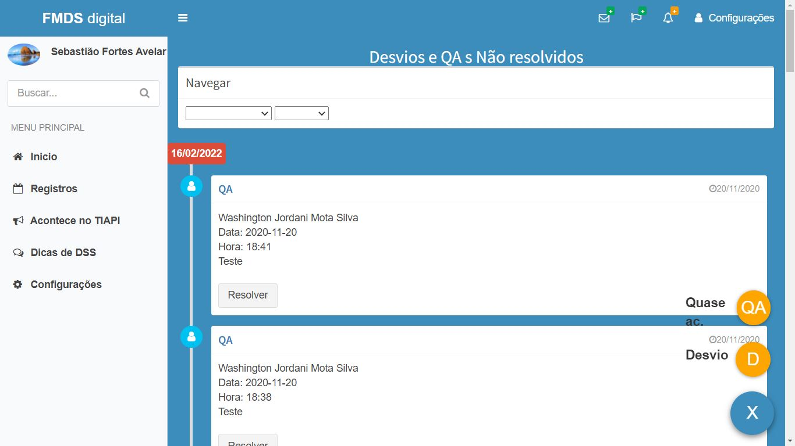
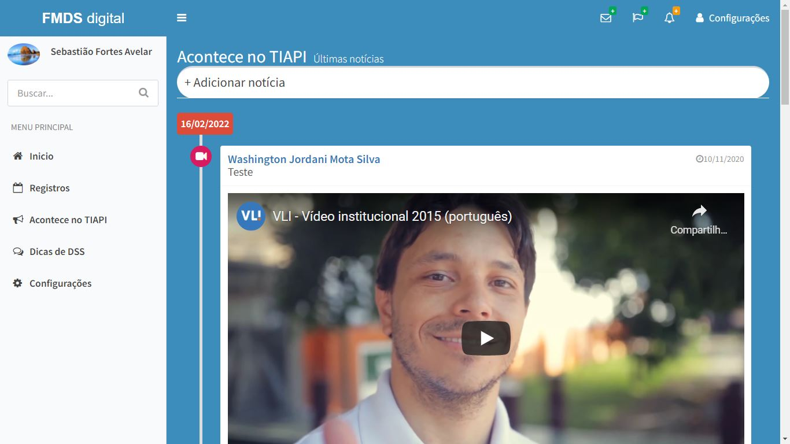

Atribuições: Full Stack Developer
Acessar
Aplicativo web pioneiro no gerenciamnto remoto do chão de fábrica.
O FMDS digital foi desenvolvido e implantado na unidade Pirapora da VLI logística para realizar o gerenciamnto do chão de fábrica de forma remota em virtude da pandemia do COVID-19.
Segurança

Notícias

Em virtude da pandemia do COVID-19 as reuniões semanais realizadas com os colaboradores do chão de fábrica foram suspensas, fato que dificultou o gerenciamento dos indicadores e a gestão participativa com os empregados.
A solução foi a criação de um aplicativo para a exibição e o gerenciamnto dos indicadores relativos ao FMDS. O sistema organizava os indicadores em conco principais pilares onde é possível fazer a atualização e conferência das informações.
Tecnologias:
Javascript
Bootstrap
PHP
MySQL